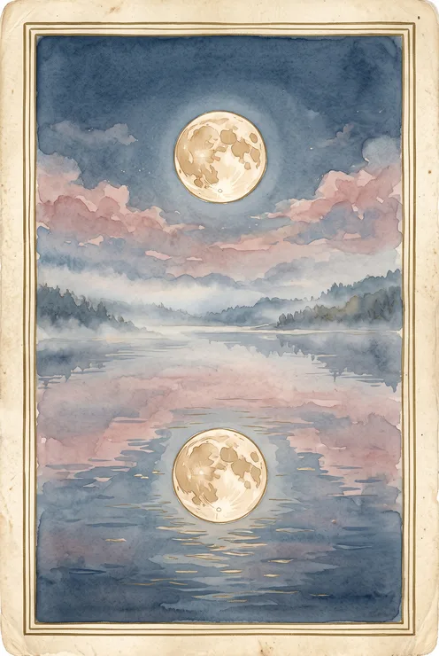
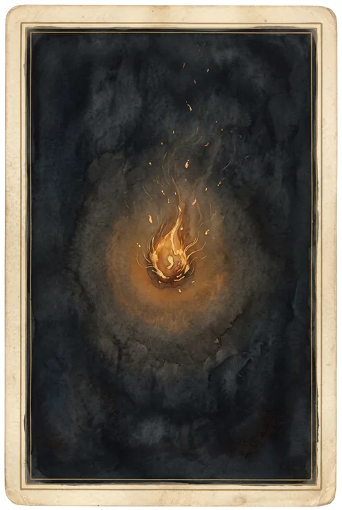
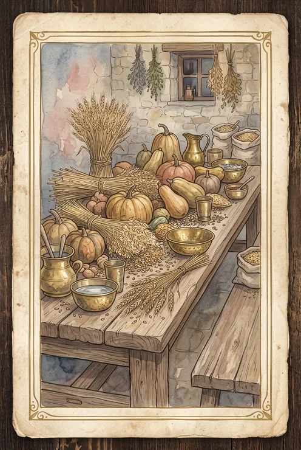
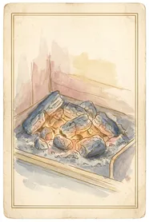
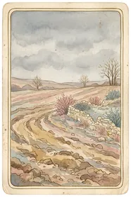
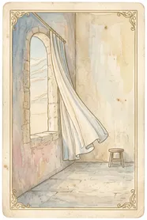

מאיה כהן
פרסונה ראשית · 28 עד 34 · "מונעת מטקסיות"קוראת תחזית משתי שיטות לפחות כמעט כל בוקר, כחלק מטקס קבוע. ממשיכה גם כשהיא יודעת שהתוכן גנרי. יש לה תיקיית גלריה עם מעל מאה תמונות תחזית שמורות. התמונה, לא הטקסט, היא מה שגורם לה לעצור.
קייס סטאדי · מוצר מובייל · עיצוב ובנייה
שש שיטות ניחוש שונות, תמונה אחת וטקסט אחד בכל בוקר. הבעיה הקשה כאן לא הייתה איך זה נראה, אלא איך בוחרים מה להראות.



מי שמתעניין בתחזיות יומיות לא סובל ממחסור. הוא סובל מעודף. אסטרולוגיה אומרת דבר אחד, נומרולוגיה דבר שני, טארוט שלישי, ולפעמים הם סותרים. התוצאה היא בוקר שמתחיל בהתלבטות בין חמש אפליקציות במקום ברגע אחד של התבוננות.
הבקשה הייתה פשוטה לניסוח וקשה לביצוע: תחזית אחת ליום. תמונה שאפשר לשמור, ופסקה קצרה לקרוא בדרך.
כל מה שלמטה נשען על ארבעה ראיונות משתמשים, על לוח FigJam שהכיל פרסונות, מפות אמפתיה, ארבע מפות מסע ו-Sitemap, ועל מסמך תיעוד תהליך. שום ציטוט או מספר כאן לא הומצא, וזה היה כלל עבודה ולא סיסמה: מילה שאי אפשר להצביע על משפט אחד במחקר שהיא נשענת עליו לא נכנסה.
ארבעה ראיונות עומק עם צרכניות תחזיות יומיות. שלוש תובנות יצאו משם, ושתיים מהן שינו את המוצר.
"הקוסמופוליטן אמר לי שיהיה יום טוב לקבל החלטות כלכליות והטארוט אמר לי להיזהר משינויים פזיזים. קיבלתי שתי הודעות שסותרות אחת את השנייה תוך חמש דקות." המתמידה הבוקרית
זו התובנה שהצדיקה את המוצר. אבל התובנה השנייה כמעט הרגה אותו: הכאב אמיתי אבל רך. אותה מרואיינת, שחוותה את הסתירה הכי חדה בדגימה, לא שינתה שום החלטה בגללה. "בפועל לא עשיתי שום דבר מיוחד עם זה, לא ביטלתי פגישה או משהו, פשוט המשכתי ליום שלי כרגיל." ועל תשלום: "לא הייתי משלמת על זה כסף בטוח."
התובנה השלישית שינתה את מבנה הכניסה למוצר: חלק ניכר מהחשיפה לתחזיות קורה דרך אנשים אחרים ולא ביוזמת המשתמשת. "אם היא לא הייתה שולחת, פשוט לא הייתי נחשפת לזה בכלל באותו יום."
ארבעה פרופילים קובצו לשתיים לפי שני צירים: עומק המעורבות, וסוג המניע, רגשי וריטואלי מול פסיבי וזהיר.
קוראת תחזית משתי שיטות לפחות כמעט כל בוקר, כחלק מטקס קבוע. ממשיכה גם כשהיא יודעת שהתוכן גנרי. יש לה תיקיית גלריה עם מעל מאה תמונות תחזית שמורות. התמונה, לא הטקסט, היא מה שגורם לה לעצור.
נחשפת לתחזיות כמעט אך ורק כשמישהו קרוב שולח לה. סירבה להתקין אפליקציה שבן זוגה המליץ עליה, ומחקה אחרת תוך יומיים כי ביקשה חיבור לחשבון בנק. כל חיכוך בכניסה מוביל אצלה לנטישה מיידית.
טל אינה המשתמשת שלשמה נבנה ה-MVP, אבל היא זו שקובעת את עיצוב הכניסה, האונבורדינג והשיתוף. פרסונה משנית שמכתיבה החלטות ראשיות היא לא סתירה, היא בדיוק מה שפרסונה משנית טובה עושה.
ארבע מפות: שתי פרסונות, ולכל אחת "אונבורדינג ראשוני" ו"כניסה יומית". כל ציון בגרפים למטה הועתק מלוח ה-FigJam כפי שהוא. שום נקודה לא הושלמה בהערכה, ואף מפה לא יושרה כדי להיראות טוב יותר.
הדירוג הוא הבור. שימי לב שהוא יושב בין שני שלבים חיוביים, וזה בדיוק מה שהופך אותו לבולט
אותו שלב, אצל פרסונה אחרת, יורד עוד יותר. שני מסעות עצמאיים שמצביעים על אותה נקודה
השיא והשפל צמודים זה לזה: התמונה מקבלת 5, והטקסט מיד אחריה מקבל 2. זה כל המוצר בשתי נקודות
המסע היחיד שמתחיל מחוץ לאפליקציה. הקישור מאדם קרוב הוא נקודת המגע הראשונה, ומכאן נולד מסלול האורח
ארבע מפות עצמאיות הן לא ארבעה עותקים של אותה תובנה. הן ארבע זוויות, והדבר היחיד שחוזר בשתיים מהן במקום זהה הוא דירוג האמון: 2 אצל מאיה, 1.5 אצל טל, בשני המקרים הבור העמוק ביותר במסע. כשאותה נקודה נופלת פעמיים בשני מסעות שנבנו בנפרד, זו כבר לא תחושה.
לפני המסעות נבנו שתי מפות אמפתיה. הן לא סיפקו את הדרמה של הגרפים, אבל הן זו שהסבירה למה השפל קורה.
זה כמו לבדוק את הטמפרטורה בחוץ, פשוט חלק מהשגרה
הטקסט הוא כמו הערת שוליים
אני יודעת שזה משפט גנרי, אבל זה עבד עליי
את בטוחה?
הקול הפנימי שנשאר ברקע
ממשיכה בטקס גם כשהיא מודעת שהתוכן גנרי
שומרת ומשתפת תמונות שמושכות אותה, כמעט בלי קשר לטקסט
ריבוי מקורות סותרים יוצר רעש רקע שלא נפתר
תחזית טקסט בלבד מתאדה מהזיכרון תוך זמן קצר
תמונה חזקה עוצרת גלילה ונחקקת בזיכרון
נוחות בלי מחויבות כספית או פונקציונלית כבדה
אני רוצה שדברים יעבדו כבר מההתחלה בלי שאני אצטרך 'לתכנת' אותם קודם
לא, תודה
כשמבקשים ממנה להתקין
אני בוחרת להאמין למה שמתאים לי כרגע ומתעלמת מהשאר
לא בטוחה, זה יותר היה מכשול שהייתי צריכה לעבור
מסרבת בפירוש להתקין אפליקציה שמוצעת לה, גם בלחץ חוזר
אף פעם לא חוזרת להגדרות אחרי ההתקנה הראשונה
כל חיכוך בכניסה, דירוג או הגדרות או בקשת נתונים, גורם לנטישה מיידית
תחושת חדירה לפרטיות כשמוצר מבקש יותר ממה שנראה הכרחי
שעשוע קליל כשמקבלת תחזית מבן משפחה או חברה
אפשרות להתעלם או להתייחס בררנית, בלי מחויבות
הבריף המקורי הניח שאפשר לבקש מהמשתמשת לדרג מאחת עד עשר כמה היא מאמינה בכל שיטה, כבר ביום הראשון, וכך לקבוע את המשקולות. זה נשמע הגיוני: המשקולות הן לב המוצר, אז שהמשתמשת תקבע אותן.
המחקר הרג את זה פעמיים. פעם ראשונה במפות המסע, שם הדירוג יצא נקודת השפל בשני האונבורדינגים. ופעם שנייה בציטוט שהסביר למה:
"ממש התלבטתי. סימנתי 'בינוני' כי לא רציתי להיראות כאילו אני מתחילה לגמרי, אבל גם לא היה לי מושג אם אני 'מתקדמת'." המזדמנת בין משימות, על אנלוגיה מאפליקציה אחרת
ההחלטה עצמה נרשמה על הלוח, במילים שלי, ליד המפות:
הדירוג לא נכשל כי הוא היה ארוך. הוא נכשל כי הוא דרש ידע שאין למשתמשת ברגע שבו הוא נדרש ממנה, והפך את הכניסה למבחן. הוא הוסר לגמרי, והמשקולות ההתחלתיות נקבעות מאחורי הקלעים.
ואז הגיעה השאלה הקשה: אם המשתמשת לא קובעת את המשקולות בהתחלה, מתי כן. התשובה מהמחקר הייתה חד משמעית ולא נוחה. אף אחת מארבע המרואיינות לא הראתה נכונות לחזור מיוזמתה למסך הגדרות: "בטח לא אחזור לפתוח תפריט הגדרות ולהתעסק עם סליידרים, זה פשוט לא שווה לי את הזמן."
כך נולד "מאחורי הקלעים" כמסך שנעול לתצוגה כברירת מחדל. הוא לא נבנה כי מישהי ביקשה לראות משקולות. הוא נבנה כדי למנוע נזק מדרישה מוקדמת, וזה תועד במפורש כהסתייגות ולא הוסתר.
הפינה הזו סגרה מעגל הרבה אחר כך. אם השליטה במשקולות אינה נתיב ליבה אבל היא כן העומק של המוצר, אז היא בדיוק מה שאפשר למכור. המודל העסקי יצא מתוך ממצא מחקר על אונבורדינג, לא מתוך דיון על תמחור.
חמש הנחות נבדקו מול המחקר. ארבע נפלו, ואחת נשארה פתוחה כדגל אדום.
ה-Sitemap נבנה כ-Status-First: ארבעה עשר כרטיסים, לכל אחד תפקיד, מיקום במסע, עדיפות ושלב MVP. תשעה נכנסו לשלב א', שלושה נדחו לשלב ב' מפורשות בגלל חוסר ראיה, ואחד נוסף אחרי שהמפה עצמה נכשלה במבחן.
הדבר הכי שימושי במפה לא היה מה שהיא כללה אלא מה שהיא סימנה כחסר. "מבחן טל" הריץ פרסונה דרך המפה ושאל אם יש לה נתיב. לא היה, וזה נכתב בתוך המפה במקום להישאר בראש של מישהו.
לפני צבע אחד נבחר, נכתב כרטיס תחושה מילולי. שבע מילים, ולכל אחת המקור המדויק במחקר שממנו היא נגזרה.
ומשם ארבעה תארים שכל אחד מהם הוא הוראה למסך ולא תיאור מצב רוח: לא טוען לאמת (שום ניסוח וודאי), שקט מבלי לפתור (תוצאה אחת, בלי הוכחה), עוצר מבט לפני שמדברים (שום שורת טקסט מעל התמונה בסדר הקריאה), טקסי חוזר על עצמו (אותה מסגרת מדויקת בכל יום, בלי רצפים ובלי הפתעות).
והמתח שהחזיק את כל השפה: התמונה חייבת להיות חזקה מספיק כדי להיחקק, אבל תמונה חזקה מספיק כדי להיזכר כבר מתחילה להישמע כמו טענה לאמת. כל בחירה חזותית בפרויקט הזה היא מיקום על הציר הזה.
זה גם מסביר את מה שאין במוצר. אין רצפים, אין תגמול על התמדה, ואין שום מסך שנראה כמו דוח נתונים. שלושתם נפסלו בכרטיס התחושה לפני שמישהו עיצב אותם.
לוח הרפרנסים לא היה אוסף תמונות יפות. לכל רפרנס נכתבה הערה שאומרת מה בדיוק לקחת ממנו, ורק זה נלקח. למטה ההערות כפי שנכתבו, וליד כל אחת מה שהיא הפכה להיות במוצר.
הערה על רפרנס שאומרת "יפה" לא שווה כלום. הערה שאומרת "האייקונים טובים כי הם משוחררים וכתב יד" היא הוראת עבודה, ואפשר לבדוק חודש אחר כך אם קיימת אותה.
לחיצה על כל תמונה פותחת אותה בגודל מלא.
שש שיטות שמתמזגות לקול אחד יכולות להיות שני דברים שונים לגמרי. הן יכולות להיות קופסה שחורה שפולטת משפט, או מנגנון גלוי שאפשר להבין ולשנות. בחרתי בשני, ומכאן נגזר כמעט כל השאר.
לכל שיטה יש משקל מספרי, המשקלים תמיד מסתכמים במאה, ויש מסך שמראה בדיוק כמה כל שיטה תרמה לתחזית של היום. אסטרולוגיה מקבלת חמישים אחוז כברירת מחדל, כי היא היחידה שקוראת את מפת הלידה של המשתמשת עצמה ולכן היא הקלט הכי אישי שיש.
ברגע שהחלטתי שהמנגנון גלוי, כל מסך במוצר חייב להיות מסוגל להסביר את עצמו. זה מה שהפך את זה מבעיית עיצוב לבעיית ארכיטקטורה.
הגילוי הזה גם פתר את שאלת המודל העסקי. אם המשקולות הן הלב של המוצר, אז מה שמוכרים הוא לא הגישה לתחזית אלא השליטה בה. התחזית חינם, שמירת משקולות משלך היא מנוי. במסך העריכה השארתי את הגרירה פתוחה לכולם ונעלתי רק את השמירה, כי סליידר מת לא מוכר כלום וסליידר שאפשר להזיז מוכר את עצמו.
כשהגעתי למאגר התמונות התברר שהשאלה "איזה ציור מתאים ליום הזה" היא לא שאלה אסתטית. ספרתי כמה מצבים שונים כל שיטה מייצרת ביום נתון: שנים עשר מזלות ירח, שמונה מופעים, תשעה מספרי יום, עשרים ושתיים ארקנות, שישים וארבע הקסגרמות, עשרים וארבע רונות.
מכפלת המצבים היא מיליוני צירופים. שום מאגר תמונות לא מכסה את זה. כלומר התמונה לא יכולה להיות מאונדקסת על הצירוף, והטקסט הוא זה שחייב לשאת אותו.
הצלבתי את המשמעויות המסורתיות של ארבע השיטות המחזוריות וגיליתי משהו שלא ציפיתי לו. הארקנות בטארוט בנויות כקשת אחת. ההקסגרמות מתקבצות לסוגי תנועה. הרונות מתקבצות גם הן. נומרולוגיה אחת עד תשע היא במפורש קשת. ארבע מתוך שש השיטות הן אותה קשת בשפות שונות.
המכנה המשותף השני הוא הטון, ואותו נותנים ארבעת היסודות. מכאן נגזרה הטקסונומיה: שני צירים ולא שישה. מיקום בקשת כפול טון, שמונה כפול ארבע, שלושים ושתיים כרטיסיות.






הטקסט מתחת לכרטיסייה לא נכתב שלושים ושתיים פעם. הוא מורכב משתי פסוקיות, אחת לקשת ואחת לטון. שנים עשר קטעים כתובים מייצרים שלושים ושתיים שורות עקביות. קופירייטר כותב שנים עשר במקום שלושים ושתיים, וכל שורה עדיין נשמעת כאילו נכתבה במיוחד.
הרצתי את מנוע הבחירה קדימה על מאה ועשרים ימים וספרתי שני דברים: כמה מהכרטיסיות בכלל נכנסות לשימוש, וכמה פעמים היום בוחר את מה שאתמול בחר.
התוצאה: כל שלושים ושתיים הכרטיסיות נכנסות לשימוש, אבל בארבעים ושלושה אחוז מהימים התמונה זהה לזו של אתמול. זה נכון עניינית, הירח באמת מחזיק מופע כארבעה ימים ומזל כיומיים וחצי, אבל קריאה שחוזרת מילה במילה נראית שבורה.
הפיתוי היה לזייף: להוסיף רעש לאינדקס כדי שהתמונה תתחלף. לא עשיתי את זה, כי המוצר מתחייב להסביר את עצמו ורעש אקראי הוא בדיוק מה שאי אפשר להסביר. במקום זה הוספתי פסוקית שלישית שנגזרת ממספר היום האוניברסלי, שמתחלף כל יום. אחרי השינוי: אפס קריאות עוקבות זהות על פני מאה ועשרים יום, והתמונה נשארה כנה.
כשמדד יוצא גרוע, יש שתי אפשרויות: לתקן את המנגנון או לתקן את המדד. כאן המנגנון היה נכון והתצוגה הייתה חסרה, ולכן התיקון נכנס לטקסט ולא לאינדקס.
כל ארבע הטעויות המשמעותיות בפרויקט היו מאותה משפחה: הנחתי מבנה במקום למדוד אותו.
| מה קרה | השורש | מה שנשאר |
|---|---|---|
| כרטיסיות בפרופורציה שגויה | קיבלתי איור בפרופורציה 1:2.15 והעיצוב דרש 1:1.49 | גאומטריה לא מתקנת ציור שגוי. מתיחה מעוותת פנים, חיתוך מוריד את פס הכותרת. רק ייצור מחדש |
| אייקונים נחתכו מוסטים | חתכתי רשת 4 על 3 על כל הקנבס, כולל שוליי הנייר, והמודל לא צייר על הרשת המתמטית | קודם חיתוך עד לציור, ואז התאמת הרשת ברגרסיה על מרכזי הציורים. הציורים מגלים את הרשת |
| זיהוי מסגרת נתפס על צל | חיפשתי את השורה הכהה ביותר, וצל הנייר כהה יותר מקו הסרגל | הפרדה לפי עובי משיכה ולא לפי כהות |
| כמעט הזמנתי אצווה במחיר שגוי | תחשיב המחיר תמחר את המודל שביקשתי, והפלטפורמה הגישה מודל אחר יקר פי שישה | תמונת בדיקה אחת והפרש יתרה לפני כל אצווה |
בודקים נכס במסכה שהוא באמת לובש. אייקון ריבועי שנראה נקי בדפדפן קבצים יכול לקבל קו שחוצה אותו ברגע שמסכה עגולה בגודל 44 פיקסל נוחתת עליו. שלושה סבבי תיקון על מאגר האייקונים נתפסו רק כי בניתי את גיליון הבדיקה עם המסכה האמיתית ולא עם הקבצים.
הייתי מודד את קצב החזרה לפני שמייצר את התמונות. הבדיקה של ארבעים ושלושה אחוז חזרה לקחה שלוש שורות קוד, ואפשר היה להריץ אותה על הטקסונומיה לפני שהוזמנה תמונה אחת. היא לא הייתה משנה את ההחלטה, אבל היא הייתה משנה את סדר העבודה.
והייתי מגדיר את מצבי הביניים ביחד עם המסך ולא אחריו. מצבי טעינה, ריקנות ושגיאה היו מוגדרים במסמך מההתחלה ונבנו בסוף, וזה החוב היחיד שהמשיך לגרור את עצמו לאורך כל הפרויקט.